4 Miscellaneous
4.1 Updating project DMPs based on a new Knowledge Model version
A knowledge model is the single underlying model for a DMP where all questions and explanations are maintained. It allows the possibility to update a DMP to the newest version of the knowledge model if any questions are added/modified/deleted. It also allows to derive domain specific DMP model which can be used as a template by projects for their DMP.
When available, select the Yellow colour pill shaped box “update available” next to your project.
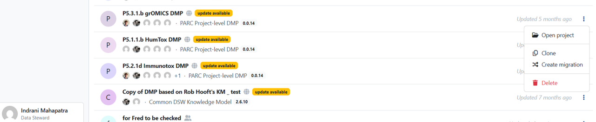
Figure 4.1: Screenshot shows “updates available” for updating a project when a new KM is announced. You will get a screen as shown in Figure 25.
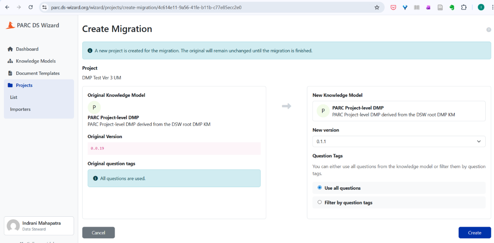
Figure 4.2: Screenshot of steps to updating DSW Knowledge Models for updating project questionnaires/templates. The latest version under the heading “New Knowledge Model” appears automatically in the box named “new version.” Though the latest version under the heading “new knowledge model” appears automatically, you can check if the knowledge model is of the latest version. See screenshot in Figure 26. Select the “Create” button (blue coloured box).
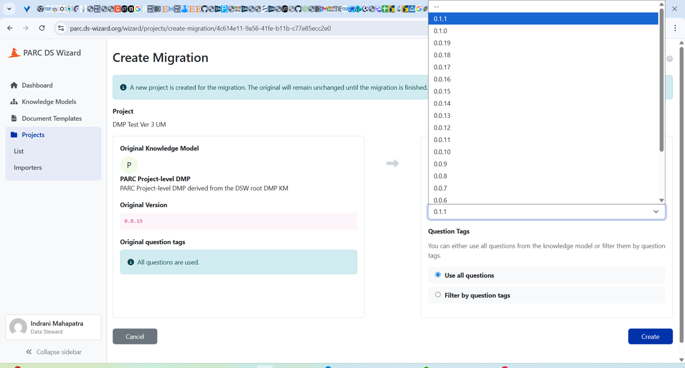
Figure 4.3: The screenshot shows different versions of the Knowledge Model Select “resolve all” (you can check the changes that would be made in the updated questionnaire.
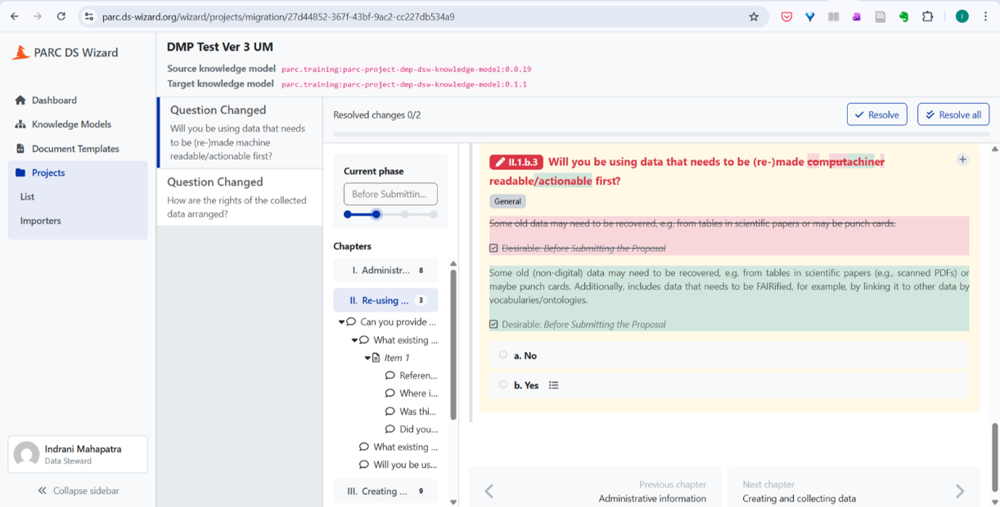
Figure 4.4: In this Figure, the differences between the Source (existing) DSW Knowledge model and the Target (New) DSW Knowledge model are shown, within an existing DMP (“DMP Test Ver 3 UM”, with different colours. Ideally, the project specific DMP has been (partially or wholly) completed with the existing Knowledge Model/Questionnaire to meet timely FAIRness of PARC data. Should domain specific changes in the KM (the content for the DMP questionnaire) have appeared in the meantime, then an update of an existing Project DMP can be easily made by “resolving all” and adding any new answers to the questionnaire. This is done by selection of “Resolve all” – the box at the top right corner, to accept all. Followed by migration (Figure 28) Click “Finalize migration” (red border box, at the top right corner) to complete the updation process.
4.2 Cloning your project to create DMP for a similar, yet new project
This section is ONLY for those projects which have got new funding, new project IDs, but are in some way closely related to a previous project.
You can search your project in the “search projects” box by using the name of the project or try to find the project which you want to create a copy of under your username (tab “users”).
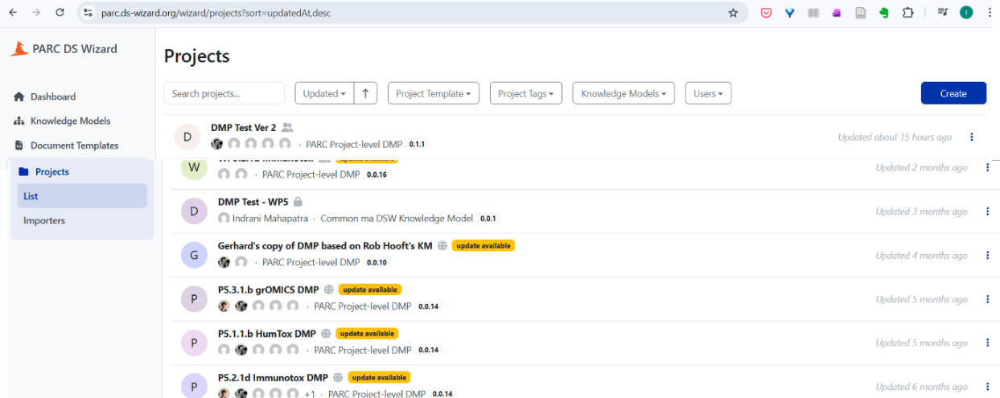
Figure 4.6: Screenshot to show the search projects box to find the project you are looking for Click on the three dots next to the project whose template you want to use for your DMP. Select the “Clone” button to create a copy of the project DMP
Figure 4.7: Screenshot to show the options next to the three dots against each project After clicking the clone tab from the drop-down menu, you will get the screen shown in Figure 31 to confirm whether you want to create a copy of the project. Click the blue coloured button “Clone” to make a clone of an already existing project for reuse
Give an appropriate name of the project in the “Settings” tab, update the questionnaire template (in Figure 33, pink coloured box shows there is a new template available). Also, scroll down the screen to check whether the knowledge model is updated (not shown in Figure here). Please note: New templates/ templates being incompatible (can be seen in pink coloured box) will also happen to projects that are not cloned.
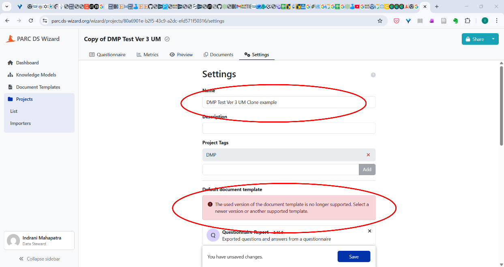
Figure 4.9: Screenshot of the screen under “Settings” Provide an appropriate project name. Select the HTML document and click “Save”.
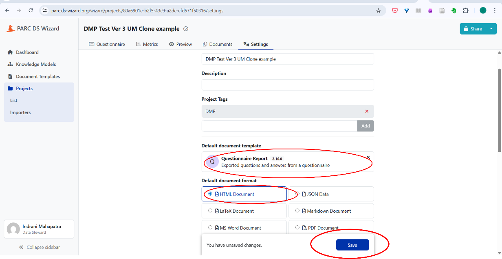
Figure 4.10: Screenshot to show saving the cloned project with a new name
4.3 Selecting DMP phases as the project progresses
Refer Figure 17 for the phases of project. You can change the phase of the project (see Figure 34). Only by changing the phase will the questions related to the next phase appear. When you are starting to create the DMP for the first time for an ongoing project use the phase “Before Submitting the DMP”.
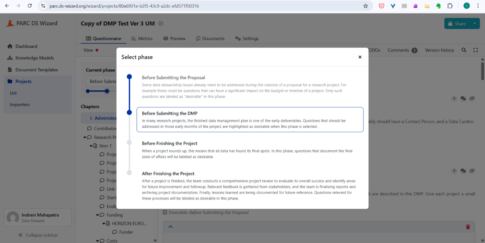
You can name the version of the DMP when you are updating (good practice is every six months, can be done more frequently) the DMP in the DSW.
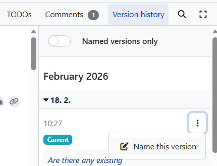
Click on the three dots (shown in Figure 35) and provide a suitable name for the version and description (see Figure 36). If no name is given to the version, you can track changes made based on the default date template.
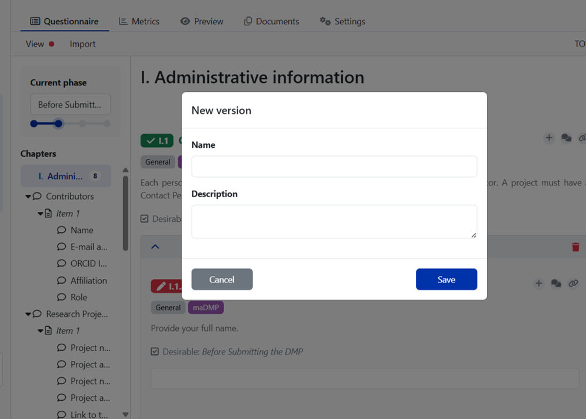
When you toggle on the “Named version only” tab (see Figure 35), you will see only those DMP versions which you have given a name to, thus reducing the view of the versions which get recorded automatically as per the date when you worked on the DMP.
4.4 To download the DMP in PDF, MS word, and other formats
The document formats help you download the document in various formats, such as JSON, LaTeX. Default is HTML for “Preview” purposes which helps to track the responses. See Figure 37.
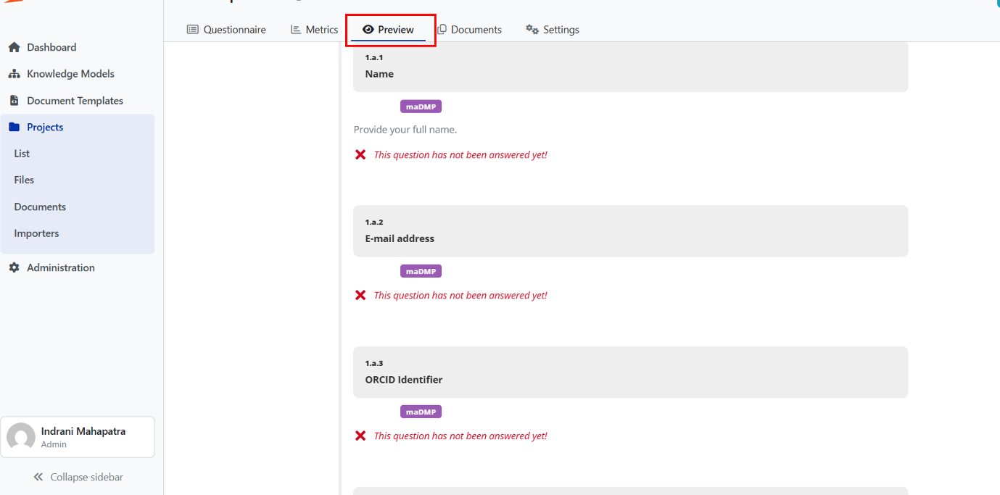
Click on “Documents” tab, select the “new document”, give the document an appropriate name (reflecting the phase of the DMP), select PDF document or MS word document, select the updated version of the questionnaire report, and then select “Create”.
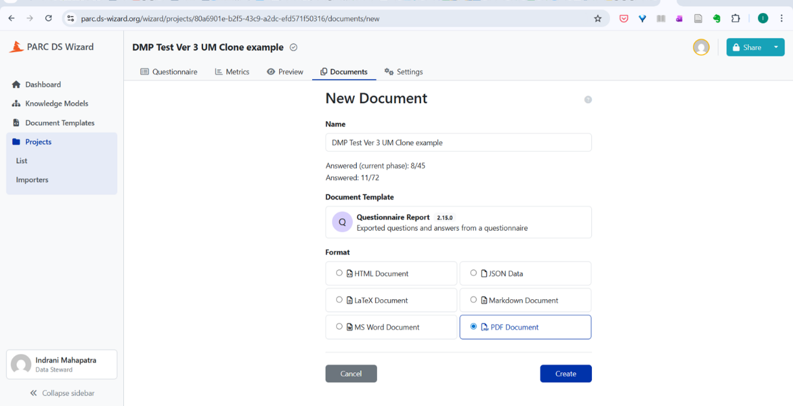
You will see the screen which creates the PDF report, hover your cursor on the file name, a black shaped box mentioning “click to download the document”, by clicking on the link, the DMP can be downloaded and saved on your computer.
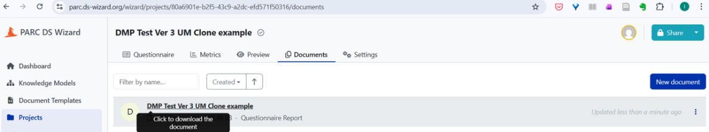